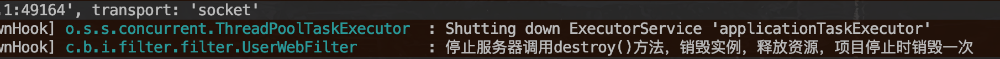

1.13.1.1. springboot使用 拦截器 过滤器 servlet
项目地址：https://github.com/heng1234/springboot2.x/tree/master/inte_filter_servlet
一、springboot使用拦截器
一个拦截器，只有preHandle方法返回true，postHandle、afterCompletion才有可能被执行；如果preHandle方法返回false，则该拦截器的postHandle、afterCompletion必然不会被执行。拦截器不是Filter，却实现了Filter的功能，其原理在于：
所有的拦截器(Interceptor)和处理器(Handler)都注册在HandlerMapping中。 Spring MVC中所有的请求都是由DispatcherServlet分发的。 当请求进入DispatcherServlet.doDispatch()时候，首先会得到处理该请求的Handler（即Controller中对应的方法）以及所有拦截该请求的拦截器。拦截器就是在这里被调用开始工作的。
新建WebMvcConfigurer实现WebMvcConfigurer
import com.boot.inte_filter_servlet.interceptor.init.UserInterceptor;
import org.springframework.beans.factory.annotation.Autowired;
import org.springframework.context.annotation.Configuration;
import org.springframework.web.servlet.config.annotation.InterceptorRegistry;
import org.springframework.web.servlet.config.annotation.ResourceHandlerRegistry;
/**
* @author : kaifa
* create at: 2019-11-04 18:18
* @description: 拦截器配置
*/
@Configuration
public class WebMvcConfigurer implements org.springframework.web.servlet.config.annotation.WebMvcConfigurer {
@Autowired
private UserInterceptor userInterceptor;
//配置拦截的资源以及放行的资源
@Override
public void addInterceptors(InterceptorRegistry registry) {
/**
* 拦截器按照顺序执行
*/
//拦截Controller所有 /*/** userInterceptor是定义的拦截器
registry.addInterceptor(userInterceptor)
//拦截的url /**是所有
.addPathPatterns("/**")
//不拦截url
.excludePathPatterns("/user/notInit")
//放行静态资源
.excludePathPatterns("/img/**","/css/**","/fonts/**","/js/**");
}
//配置静态资源的位置
@Override
public void addResourceHandlers(ResourceHandlerRegistry registry) {
}
}
定义拦截器
UserInterceptor实现HandlerInterceptor
import org.slf4j.Logger;
import org.slf4j.LoggerFactory;
import org.springframework.stereotype.Component;
import org.springframework.web.servlet.HandlerInterceptor;
import org.springframework.web.servlet.ModelAndView;
import javax.servlet.http.HttpServletRequest;
import javax.servlet.http.HttpServletResponse;
/**
* @author : kaifa
* create at: 2019-11-05 10:24
* @description: 拦截器
*/
@Component
public class UserInterceptor implements HandlerInterceptor {
/**
* log日志
*/
Logger log= LoggerFactory.getLogger(this.getClass());
/**
* 预处理回调方法，实现处理器的预处理（如检查登陆），第三个参数为响应的处理器，自定义Controller
* 返回值：true表示继续流程（如调用下一个拦截器或处理器）；false表示流程中断（如登录检查失败），不会继续调用其他的拦截器或处理器，此时我们需要通过response来产生响应；
*/
@Override
public boolean preHandle(HttpServletRequest request, HttpServletResponse response, Object handler) throws Exception {
log.info("----------拦截器---Controller方法调用之前被拦截，放行...");
return true;
}
/**
* 后处理回调方法，实现处理器的后处理（但在渲染视图之前），此时我们可以通过modelAndView（模型和视图对象）对模型数据进行处理或对视图进行处理，modelAndView也可能为null。
*/
@Override
public void postHandle(HttpServletRequest request, HttpServletResponse response, Object handler, ModelAndView modelAndView) throws Exception {
log.info("----------拦截器---Controller方法调用之后被拦截");
}
/**
* 整个请求处理完毕回调方法，即在视图渲染完毕时回调，如性能监控中我们可以在此记录结束时间并输出消耗时间，还可以进行一些资源清理，类似于try-catch-finally中的finally，但仅调用处理器执行链中
*/
@Override
public void afterCompletion(HttpServletRequest request, HttpServletResponse response, Object handler, Exception ex) throws Exception {
log.info("----------拦截器---日志记录....");
}
}
controller测试拦截器
import org.springframework.web.bind.annotation.RequestMapping;
import org.springframework.web.bind.annotation.RestController;
/**
* @author : kaifa
* create at: 2019-11-05 11:08
* @description: 测试拦截器
*/
@RestController
@RequestMapping("user")
public class UserController {
@RequestMapping("init")
public String init(){
return "init";
}
@RequestMapping("notInit")
public String notInit(){
return "notInit";
}
}
访问http://localhost:7008/user/init

访问http://localhost:7008/user/notInit则不会拦截因为拦截器配置了不拦截此路径
二、springboot使用过滤器注解版
在启动类加上@ServletComponentScan注解
UserWebFilter
import org.slf4j.Logger;
import org.slf4j.LoggerFactory;
import org.springframework.core.annotation.Order;
import javax.servlet.*;
import javax.servlet.annotation.WebFilter;
import javax.servlet.http.HttpServletRequest;
import java.io.IOException;
/**
* @author : kaifa
* create at: 2019-11-05 17:59
* @description: 使用拦截器注解版
*/
@Order(1)//优先级
@WebFilter(filterName = "userfilter",urlPatterns = "/*")
public class UserWebFilter implements Filter {
/**
* log日志
*/
Logger log= LoggerFactory.getLogger(this.getClass());
/**
* 该方法由 web 容器调用,以指示 Filter 已经投入使用。servlet容器在实例化过滤器之后调用init方法一次。在要求过滤器执行任何过滤工作之前，init方法必须成功完成。当 init 方法出现以下情况时 Filter 将不生效:
* a.抛出了 ServletException 异常;
* b.在一段时间内没有返回结果(超时了)
* @param filterConfig
* @throws ServletException
*/
@Override
public void init(FilterConfig filterConfig) throws ServletException {
log.info("调用init()方法初始化实例，在项目启动时候调用一次");
}
@Override
public void doFilter(ServletRequest servletRequest, ServletResponse servletResponse, FilterChain filterChain) throws IOException, ServletException {
HttpServletRequest request = (HttpServletRequest) servletRequest;
String requestURI = request.getRequestURI();
StringBuffer requestURL = request.getRequestURL();
log.info("requestURI:" +requestURI+" "+"requestURL:"+requestURL);
log.info("每一请求只调用方法的doFilter()进行真正的过滤处理，每次发出请求都会调用");
filterChain.doFilter(request, servletResponse);
}
@Override
public void destroy() {
log.info("停止服务器调用destroy()方法，销毁实例，释放资源，项目停止时销毁一次");
}
}
测试过滤器
import org.springframework.web.bind.annotation.RequestMapping;
import org.springframework.web.bind.annotation.RestController;
/**
* @author : kaifa
* create at: 2019-11-05 18:23
* @description: 测试过滤器
*/
@RestController
@RequestMapping("filter")
public class FilterController {
@RequestMapping("filterTest")
public String filterTest(){
return "this filter";
}
}
启动项目

访问url
停止工程

三、springboot使用servlet
UserServlet
import lombok.extern.slf4j.Slf4j;
import javax.servlet.ServletException;
import javax.servlet.annotation.WebServlet;
import javax.servlet.http.HttpServlet;
import javax.servlet.http.HttpServletRequest;
import javax.servlet.http.HttpServletResponse;
import java.io.IOException;
/**
* @author : kaifa
* create at: 2019-11-06 09:50
* @description: servlet
*/
@WebServlet(urlPatterns = "/user")
@Slf4j
public class UserServlet extends HttpServlet {
@Override
protected void doGet(HttpServletRequest req, HttpServletResponse resp) throws ServletException, IOException {
log.info("user--doGet方法");
resp.setHeader("Content-Type","text/html;charset=UTF-8");
resp.getOutputStream().write("user--doGet方法".getBytes("UTF-8"));
}
@Override
protected void doPost(HttpServletRequest req, HttpServletResponse resp) throws ServletException, IOException {
doGet(req, resp);
}
}

四、springboot使用listener
import lombok.extern.slf4j.Slf4j;
import javax.servlet.annotation.WebListener;
import javax.servlet.http.HttpSessionEvent;
import javax.servlet.http.HttpSessionListener;
import java.util.concurrent.atomic.AtomicInteger;
/**
* @author : kaifa
* create at: 2019-11-06 09:57
* @description: 监听器session
*
*
* */
@Slf4j
@WebListener
public class MyListener implements HttpSessionListener {
private AtomicInteger onLineCount = new AtomicInteger(0);
/**
* ServletContextListener -- 监听servletContext对象的创建以及销毁
*
* contextInitialized(ServletContextEvent arg0) -- 创建时执行
*
* contextDestroyed(ServletContextEvent arg0) -- 销毁时执行
*
* HttpSessionListener -- 监听session对象的创建以及销毁
*
* sessionCreated(HttpSessionEvent se) -- 创建时执行
*
* sessionDestroyed(HttpSessionEvent se) -- 销毁时执行
*
* ServletRequestListener -- 监听request对象的创建以及销毁
*
* requestInitialized(ServletRequestEvent sre) -- 创建时执行
*
* requestDestroyed(ServletRequestEvent sre) -- 销毁时执行
*
* ServletContextAttributeListener -- 监听servletContext对象中属性的改变
*
* attributeAdded(ServletContextAttributeEvent event) -- 添加属性时执行
*
* attributeReplaced(ServletContextAttributeEvent event) -- 修改属性时执行
*
* attributeRemoved(ServletContextAttributeEvent event) -- 删除属性时执行
*
* HttpSessionAttributeListener --监听session对象中属性的改变
*
* attributeAdded(HttpSessionBindingEvent event) -- 添加属性时执行
*
* attributeReplaced(HttpSessionBindingEvent event) -- 修改属性时执行
*
* attributeRemoved(HttpSessionBindingEvent event) -- 删除属性时执行
*
* ServletRequestAttributeListener --监听request对象中属性的改变
*
* attributeAdded(ServletRequestAttributeEvent srae) -- 添加属性时执行
*
* attributeReplaced(ServletRequestAttributeEvent srae) -- 修改属性时执行
*
* attributeRemoved(ServletRequestAttributeEvent srae) -- 删除属性时执行
* */
@Override
public void sessionCreated(HttpSessionEvent se) {
se.getSession().getServletContext().setAttribute("onLineCount", onLineCount.incrementAndGet());
log.info("session初始化完成");
}
@Override
public void sessionDestroyed(HttpSessionEvent se) {
log.info("session销毁");
se.getSession().getServletContext().setAttribute("onLineCount", onLineCount.decrementAndGet());
}
}